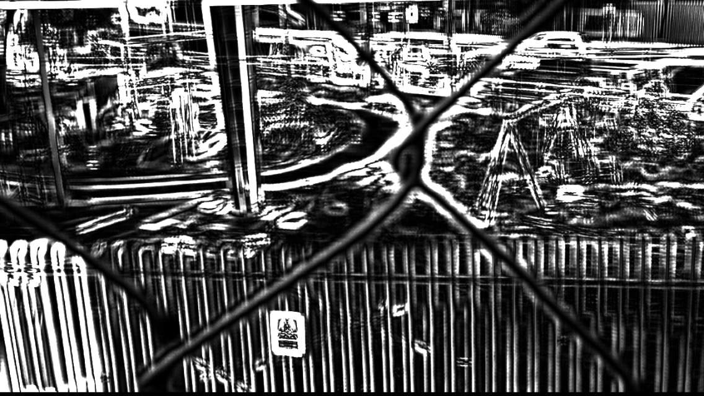
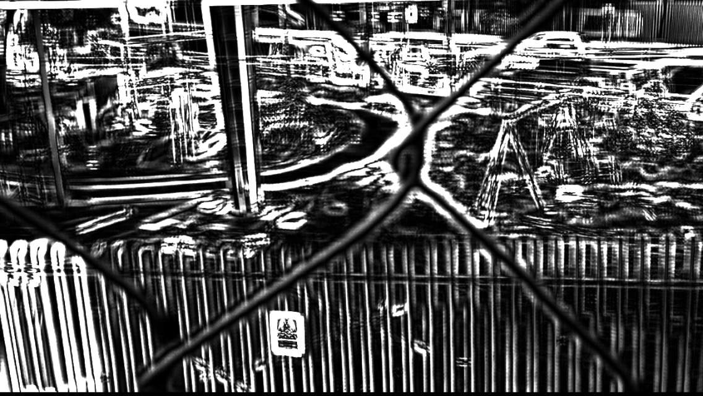

Plaza Desventura
Laure + Dick + Neo's Plaza Desventura is an AR (augmented reality) work related to specific sites in Toronto & Mexico City, though its bloodlines go back to 1970s underground Montreal (underground in the sense that malls and train and subway stations were then brutalist bunkers: whether in response to the Cold War or just cold winters, we cannot say…). Set on footbridges in the two cities, the project re-animates leftover urban infrastructure. Unmoored from their temporal and spatial contexts, these artifacts are repurposed in the virtual world: one becomes a bobbing, twirling render of a mock condo unit in new high-rise development (groundbreaking ceremony TBA); the other, a waterless fountain, becomes a water wheel or heli-rotor. Seen from a place of crossed paths, where we tend to do anotherour best to unsee one (the city overlapping the city), the project calls up the contemporary reality of (non-)persons living separately in the same (non-)place.
_THE JUSTIN_ is a derelict fountain—not Duchamp/Elsa von Freitag/Dame Rude’s urinal… though it could be a urinal—stuck in between underpasses, overpasses & a cloverleaf of ramps for the Mexico City ring road. Dick first saw it during the rainy season, a lush oasis of calm among heavy traffic; he then mistook the stagnant rainwater for a mirror pool. Revisited during the dry season, its bleak, non-functional, dusty grounds were conspicuous. Its wheel-like design of volcanic rock spokes supporting raised plumbing that wasn’t spouting water made us want to turn it into a spiral staircase for pedestrians to access the adjacent elevated expressway… or even into a space elevator, a flashy red trans-orbital ‘copter for Justin and Elon and Grimes to go to Mars & drink their very dirty martinis before cryopreserving their heads.
_THE SAYDIE_ is a cantilevered bridge-control building about to be demolished: a small pavilion exuding modernist elegance, a simple cenotaph to absent friends. Though its modular infrastructure will soon be superseded by flashier but more generic, computer-designed relatives, it still towers above the surrounding wastelands, which will also be reshaped as upscale mixed-use development piggybacking on flood control. We mourn _THE SAYDIE_’s loss–paint it black, as it was–but we now rebuilt it as a torsion box to resist its own demolition. We wanted it to drop from the sky—like a spent rocket booster or fallen falcon—and yet crush no passersby, do no infrastructural damage, just sit there. But all we could get it to do was twirl a few times, like a moving memorial, before it slipped away, exiting our limited field of view.
Footbridges are catwalks for these dead pavilions, a vantage point—largely unappreciated—from which pedestrians can scan the surroundings. We tend to rush through them, worried about our/their isolation, annoyed by some of their awkward elements, like abrupt switchbacks in otherwise stately designs; others make us feel claustrophobic, like caged animals, swathed as they are in metal fencing meant to prevent intentional or accidental falls as well as possible pranks or acts of vandalism…
The tracks that run under the Gerrard St. footbridge lead to where the new transit development is dumping its train yard in a congested high-rise neighborhood. The other way, they lead past where _THE SAYDIE_ artifact juts out beside its replacements: a postmodern arrangement for holding dual meaning. The Mexico City ring road encircles _THE JUSTIN_ fountain and parkette in rough proximity. With our models, we wanted to lend these disengaged structures a new function. Can we simultaneously hold in space, visually, the remnants of past and present structures —like we do in our minds? Can we break the habit of watching things from a single direction? Laure felt sound could be directionless (or at least off axis, out of sync) and leave a mark. We originally enjoyed the glitches in the models, the animations; and Dick wanted to make the Buenavista footbridge even more confusing than it already was. So the sound is also meant as a jarring element, regrounding Neo’s effortlessly spinning AR renders in the uneasy materiality of the original artifacts: they screech, they grind… wear and tear has made them noisy and no amount of lubricant can silence their rusted, fractured cogs… or could it be that the noise is from something else—something organic, perhaps, like peregrine falcon chicks begging for food, nesting inside the disused infrastructure? What is this “wah-wah” we perceive, is it ambient or issuing from the structures or is their movement tricking us? Hard to tell. The virtual isn’t only yoked to the material.
Black Lines
 


Red Lines
Triggers
Process
Drawings of Buenavista Footbridge
Drawings of Gerrard St. Footbridge
Model Tests
The Justin

The Saidye
Site Documentation

Thornecliff Plaza

References